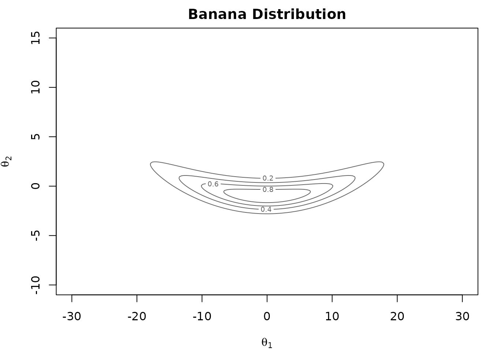
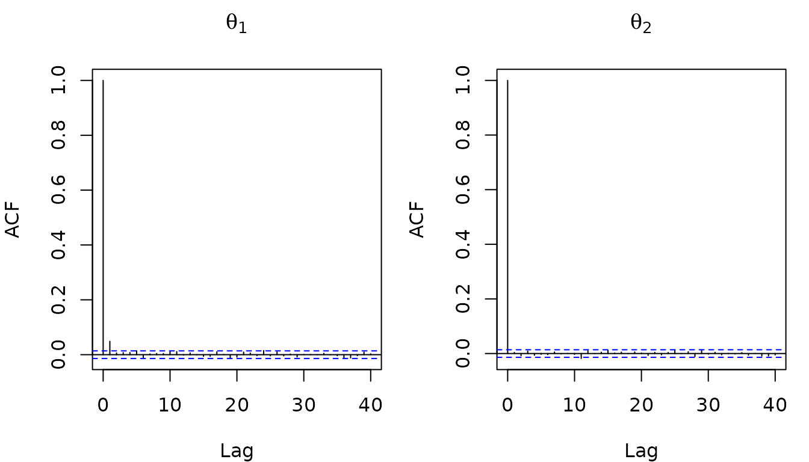
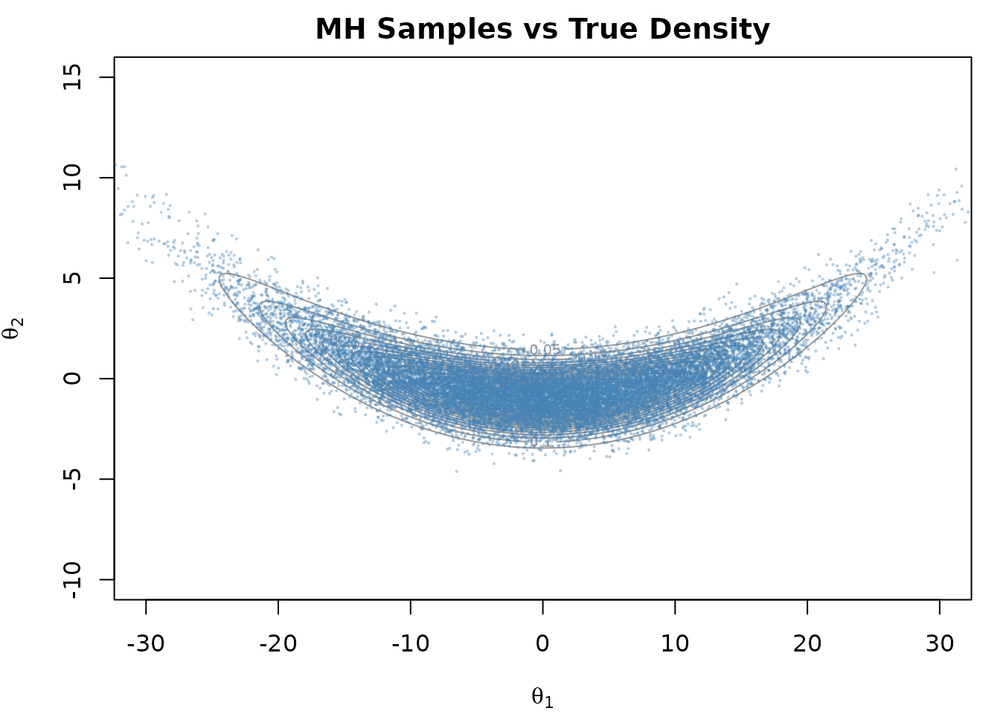
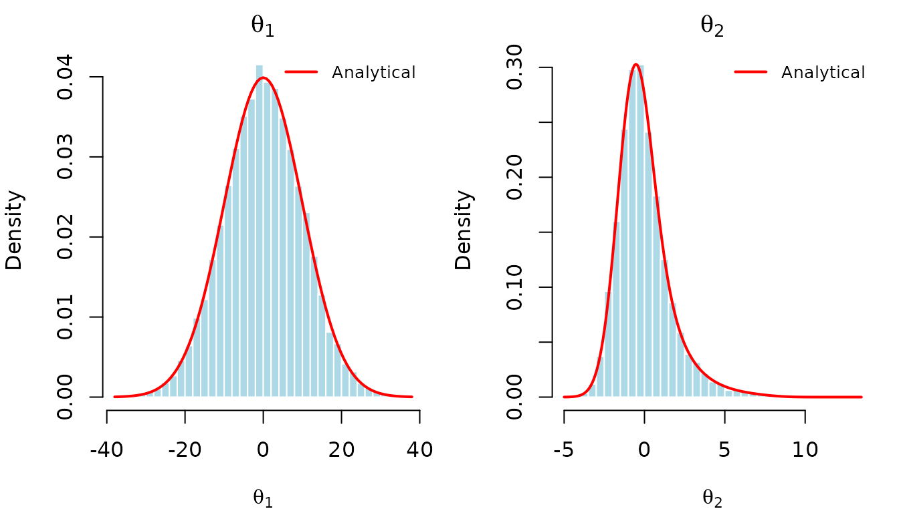

In this vignette, we show how to implement a random-walk Metropolis-Hastings sampler using {anvil} (Hastings 1970). Metropolis-Hastings is a well known MCMC algorithm that generates samples from a target distribution by proposing moves and accepting or rejecting them based on the density ratio.
The Banana Distribution
We sample from a “banana-shaped” distribution (Haario, Saksman, and Tamminen 1999). This 2-dimensional distribution consists of two Gaussian densities, where the second is dependent on the first:
\[p(\theta_1, \theta_2) = \underbrace{\frac{1}{\sqrt{200\pi}} \exp\!\left(-\frac{\theta_1^2}{200}\right)}_{p(\theta_1)} \;\cdot\; \underbrace{\frac{1}{\sqrt{2\pi}} \exp\!\left(-\frac{\bigl(\theta_2 - b\theta_1^2 + 100b\bigr)^2}{2}\right)}_{p(\theta_2 \mid \theta_1)}\]
While it is trivial to sample from this distribution directly, it serves as a useful test case for our Metropolis-Hastings sampler implementation. The distribution has known analytical moments which we will use later to verify the correctness of our implementation. We set the hyperparameter \(b\) to 0.01.

Metropolis-Hastings Algorithm
The random-walk Metropolis-Hastings algorithm proceeds as follows:
- Propose \(\theta' = \theta + \varepsilon\), where \(\varepsilon \sim \mathcal{N}(0, s^2 I)\)
- Compute the acceptance ratio \(\alpha = p(\theta') / p(\theta)\)
- Accept \(\theta'\) with probability \(\min(1, \alpha)\)
In practice, we work with log-densities rather than densities directly. Density values can become extremely small in high-dimensional or concentrated distributions, causing floating-point underflow. By operating in log-space, the acceptance ratio \(p(\theta') / p(\theta)\) becomes a simple difference \(\log p(\theta') - \log p(\theta)\), which is numerically stable. Furthermore, because the algorithm only ever evaluates ratios of densities, any normalizing constant cancels out in the difference. This means we only need to know the log-density up to an additive constant.
The log-density of the banana distribution (up to a constant) is:
\[\log p(\theta_1, \theta_2) = -\frac{\theta_1^2}{200} - \frac{\bigl(\theta_2 - b\theta_1^2 + 100b\bigr)^2}{2}\]
We implement this in {anvil} and convert the parameter to an
f64 tensor for maximal precision.
b_t <- nv_scalar(b_param, dtype = "f64")
log_density <- function(theta, b) {
theta1 <- theta[1]
theta2 <- theta[2]
-theta1^2 / 200 - (theta2 - b * theta1^2 + 100 * b)^2 / 2
}There are a few things to note in the code below:
- the accept/reject decision uses the primitive
nv_if()and not a native R conditional. - we sample a scalar uniform random number by setting
shape = integer() - the RNG state is passed around explicitly.
mh_step <- function(theta, rng_state, b, proposal_sd) {
rng_out <- nv_rnorm(shape(theta), rng_state, dtype = "f64")
rng_state <- rng_out[[1L]]
proposal <- theta + proposal_sd * rng_out[[2L]]
log_current <- log_density(theta, b)
log_proposed <- log_density(proposal, b)
log_accept <- log_proposed - log_current
rng_out <- nv_runif(integer(), rng_state, dtype = "f64")
rng_state <- rng_out[[1L]]
u <- rng_out[[2L]]
accept <- log(u) < log_accept
new_theta <- nv_if(accept, proposal, theta)
list(theta = new_theta, rng_state = rng_state)
}Because subsequent samples are autocorrelated, we thin the output by
keeping every nth sample. We implement this loop via
nv_while() below, avoiding R loop overhead.
mh_sample <- jit(function(theta, rng_state, b, proposal_sd, thin) {
result <- nv_while(
init = list(theta = theta, rng_state = rng_state, i = nv_scalar(0L)),
cond = \(theta, rng_state, i) i < thin,
body = \(theta, rng_state, i) {
c(mh_step(theta, rng_state, b, proposal_sd), list(i = i + 1L))
}
)[1:2]
})Running the Sampler
We specify the required parameters and run the sampler. Again, note that we are passing around the RNG state explicitly.
n_samples <- 20000L
n_warmup <- 5000L
thin <- nv_scalar(200L)
theta <- nv_tensor(c(0, 0), dtype = "f64")
rng_state <- nv_rng_state(seed = 42L)
proposal_sd <- nv_scalar(3, dtype = "f64")
result <- mh_sample(theta, rng_state, b_t, proposal_sd, thin)
theta <- result$theta
rng_state <- result$rng_state
for (i in seq_len(n_warmup)) {
result <- mh_sample(theta, rng_state, b_t, proposal_sd, thin)
theta <- result$theta
rng_state <- result$rng_state
}
thetas <- vector("list", n_samples)
for (i in seq_len(n_samples)) {
result <- mh_sample(theta, rng_state, b_t, proposal_sd, thin)
theta <- result$theta
rng_state <- result$rng_state
thetas[[i]] <- theta
}
samples <- do.call(rbind, lapply(thetas, function(x) as.vector(as_array(x))))
colnames(samples) <- c("theta1", "theta2")Next, we compare the results with the analytical moments to see whether everything worked as expected.
Inspecting the Results
The autocorrelation function (ACF) of the thinned samples shows that successive draws are nearly independent:

The banana distribution has known analytical moments. Since \(\theta_1 \sim \mathcal{N}(0, 100)\) and \(\theta_2 \mid \theta_1 \sim \mathcal{N}(b\theta_1^2 - 100b, 1)\):
- \(\mathbb{E}[\theta_1] = 0\), \(\text{SD}[\theta_1] = 10\)
- \(\mathbb{E}[\theta_2] = 0\), \(\text{SD}[\theta_2] = \sqrt{2 \cdot 10^4 b^2 + 1}\)
## Parameter MH_Mean True_Mean MH_SD True_SD
## 1 theta1 0.032508472 0 9.977817 10.000000
## 2 theta2 0.008427101 0 1.720547 1.732051The Metropolis-Hastings estimates closely match the analytical moments, confirming the correctness of our implementation.
We can visualize the samples against the true density contours:

And overlay the analytical marginal densities on histograms of the samples.
